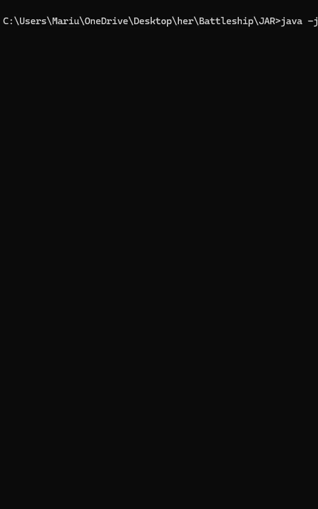

Battleship Game Implementation
This project showcases a from-scratch implementation of the classic board game, Battleship, developed during my Bachelor’s studies at UiB. This console-game is a single-player experience against the computer, featuring both the setup phase for placing ships on the board and the gameplay phase where players take turns firing at each other’s boards.
For more information and to explore the codebase, please refer to the GitHub repository.
Project Structure
in this section, we will go through the several core components that handle different aspects of the game.
The Game object dictates the flow of the game. It manages the overall game state and interacts with the Board object, which contains information about the game board. The Game object ensures that all game rules are enforced and coordinates the turns between the player and the AI opponent.
The Board object contains all the information about the game board, including methods for placing objects, getting locations, and copying the board. It is responsible for tracking the state of the game grid (board), including the positions of ships and hits/misses during gameplay.
Key Methods in Board Object:
placeBoardObject: Places ships on the board during the setup phase.getLocation: Retrieves the location at a specific position on the board.copy: Creates a copy of the board to manage game states.
The ICompetitor interface defines the actions that any game competitor (player or AI) must implement. This includes setting up their board, taking turns, and handling hits to their ships.
Key Methods in ICompetitor Interface:
setup: Places ships on the board and initializes health.doTurn: Executes the player's turn, allowing them to attack.getHealth:Returns the current health of the player, indicating how many ship tiles are left.hit: Reduces the health of the player when one of their ship tiles is hit.
Code Snippets
Attack Method in Game Class
Handles the logic for player and AI attacks, checking for hits or misses.
public void attack(int x, int y, String attacker) {
IBoardObject target;
if (attacker.equals("player")) {
target = aiBoard.getLocation(x, y).getData();
if (target.getName().equals("Water")) {
System.out.println("Miss!");
replaceBoardObject(new Water(), x, y, "attack");
} else {
System.out.println("Hit!");
aiBoard.getLocation(x, y).hit();
replaceBoardObject(new HitMarker(), x, y, "attack");
}
} else if (attacker.equals("ai")) {
char xInChar = (char) ('a' + x - 1);
System.out.println("The opponent shot at " + xInChar + y);
target = playerBoard.getLocation(x, y).getData();
if (target.getName().equals("Water")) {
System.out.println("Miss!");
replaceBoardObject(new Water(), x, y, "player");
} else {
System.out.println("Hit!");
playerBoard.getLocation(x, y).hit();
replaceBoardObject(new HitMarker(), x, y, "player");
}
}
}
Setup Method in Game Class
This method sets up the game by placing ships for both the player and the AI. It ensures that ships are placed at valid locations and initializes the game state.
public void setupGame() {
// Setup player ships
for (String shipType : getShipTemplate()) {
boolean placed = false;
while (!placed) {
System.out.println("Place your " + shipType);
String input = sc.nextLine(); // Get user input for ship placement
boolean horizontal = (Math.random() < 0.5); // Randomly decide the orientation
IBoardObject ship = createBoardObject(shipType); // Create the ship object
placed = player.placeShip(playerBoard, input, ship, horizontal); // Attempt to place the ship
}
}
// Setup AI ships
for (String shipType : getShipTemplate()) {
boolean placed = false;
while (!placed) {
int x = (int) (Math.random() * aiBoard.getWidth());
int y = (int) (Math.random() * aiBoard.getHeight());
boolean horizontal = (Math.random() < 0.5);
IBoardObject ship = createBoardObject(shipType);
placed = aiBoard.placeBoardObject(ship, x, y, horizontal);
}
}
System.out.println("Game setup complete. Let the battle begin!");
}
Visual Demonstration
The following visuals illustrate the game's setup and gameplay phases. First, the player places their ships on the board, thereafter, the AI does the same. Next, the player and the AI takes turn attacking.
Conclusion
The project demonstrates the core mechanics of the classic Battleship game, with a focus on seamless interaction between the game components. The Game object manages the overall flow, much like a game master, while the Board object tracks the state of the game. With the Player interacting with the board through the game object to place ships, attack, and respond to the AI's moves, there is a harmonious interaction between the game components. By sharing this project, I hope others can find it educational and useful for their own projects.